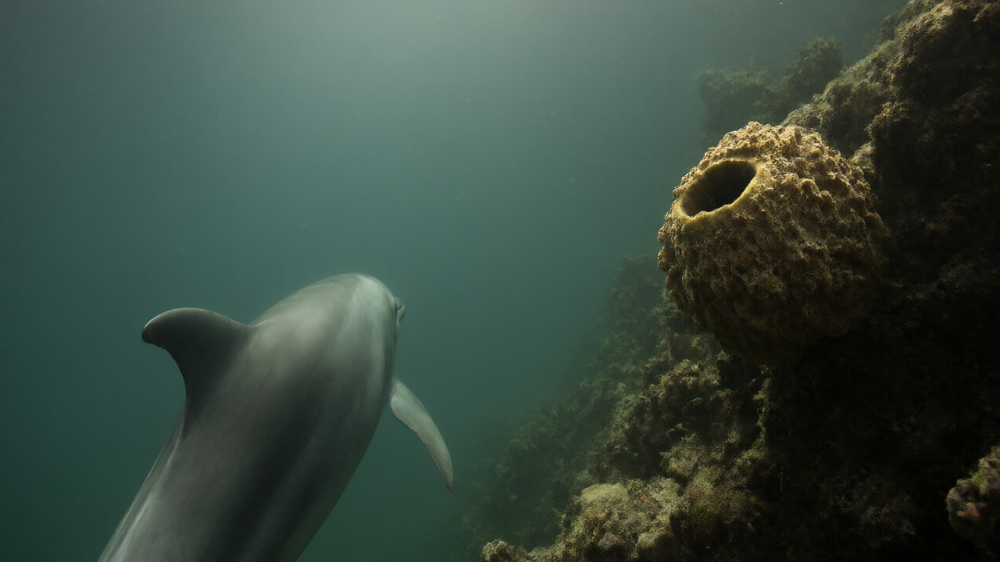

Producers of the new nature series deliberately include cloudier, less polished shots to assure viewers that wildlife footage is real and not AI-generated.
The BBC’s acclaimed nature documentary series Blue Planet III is taking a deliberate step backward in visual polish to move forward in trust. Producers of the upcoming season have confirmed that the show will intentionally include cloudier, less refined footage to counter the growing prevalence of artificial intelligence in media and assure audiences that every animal interaction captured is genuinely authentic.
Nearly a decade after Blue Planet II brought global attention to plastic pollution, and twenty-five years after the original series first aired, the franchise returns with a focus on unprecedented animal behavior and cutting-edge technology. The new installment features the world’s first underwater CCTV camera, nicknamed the "stonefish" cam, alongside other innovations designed to capture marine life in its most natural state.
While television and camera technology have evolved to provide increasingly sharp and high-definition images over the years, the rise of generative AI has created a new challenge for documentary makers. To distinguish their work from synthetic media, producers decided to embrace what they term "organic" footage. This approach involves leaving in sequences that were previously considered too murky or cluttered by traditional broadcasting standards.
Executive producer Elizabeth White explained that the boom in AI makes the team want to be even more authentic. She noted that creatures filmed in the deep ocean are often more remarkable than anything AI could imagine, emphasizing that the content is completely real. In the past, production teams might have excluded scenes filled with plankton or framed out boats and buoys if water conditions were poor. Now, these elements are being retained to demonstrate reality.
Jack Bootle, the BBC’s specialist factual commissioning head, assured journalists at a press screening that no generative AI was used in the series. He stated clearly that not a single frame was artificially generated and that all imagery stems from real photography. Bootle described the current era as a golden age for natural history filmmaking, noting that the series is bursting with novel behaviors that may surprise viewers who feel they have seen it all before.
Among the never-before-seen actions captured is a sequence showing dolphins using sea sponges to block holes in coral reefs to trap fish. This footage was obtained using an underwater CCTV system developed by the program’s producer and director, Yoland Bosiger. The series also highlights grouper communicating with other fish species, hundreds of thousands of crabs feeding in formation, and sea urchins using shells as protective sun hats.
The production involved four years of filming across five oceans, during which BBC Studios continually innovated. Techniques included creating a mini-dome camera to follow an octopus, utilizing a deep-sea selfie stick, and employing camera operators wearing leg-mounted scooters to create immersive, TikTok-style diving footage. Lasers were also used to film deep-sea creatures, adding to the technical repertoire of the natural history unit.
The series also addresses environmental threats and resilience. One episode explores how warmer seas caused by the climate crisis are killing off sea anemones where clownfish live, and how these animals attempt to repair their homes. The issue of plastics, raised in the previous series, continues with a story about pollutants and forever chemicals. David Attenborough, now 100 years old, remains deeply involved, making changes to scripts and retaining his curiosity for new footage.
Blue Planet III is scheduled to start on Sunday, November 1, on BBC1 and iPlayer. While the BBC is undergoing a significant cost-cutting drive, producers noted that this series made savings by using more local crews on location compared to previous installments.
All factual claims in the draft article are directly supported by the reference text. The draft accurately reflects the details regarding production choices, specific technologies, animal behaviors, personnel statements, and release information found in the source.